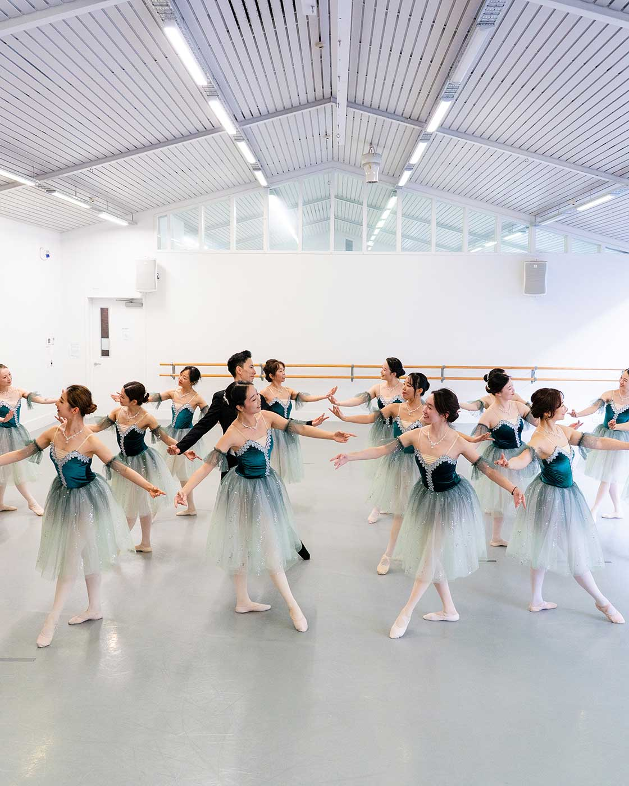

2026 Programme
Sunday, 20 September 2026 · Wellesley Studios
Show I: 4:00pm | Show II: 5:00pm
Introduction
Today, 36 dancers of different levels and experience come together to share their love of ballet. For some, this will be their very first performance.
This showcase is an opportunity for our dancers to share what they have been working on in class and, most importantly, to enjoy the experience of performing together.
This year marks the fourth year of my ballet school, and I’m very proud of all the dancers who are performing today.
Thank you for being here and for supporting our dancers. We hope you enjoy this short programme.
Mari Yamazaki
Founder & Choreographer
This Afternoon
Belle of the Ball
Inspired by my childhood teacher’s choreography, this piece holds a special place in my heart. I first saw it performed by older dancers when I was eight, and my sister and I loved the opening theme so much that we would watch the video at home and copy the movements—long before I had even started ballet myself.
Dancers — Emma, Linlin, Rosa, Sachiko, Sammi, Ying, Yumiko
Awakening of Flora variation
This joyful variation is from the short ballet The Awakening of Flora, in which Flora, the Roman goddess of flowers, awakens with the arrival of spring. It celebrates the renewal of nature as the world gently comes to life with beauty and love.
Dancers — Claire
Kitri’s variation from Don Quixote
This famous “Fan Variation” is performed during Kitri and Basilio’s wedding celebrations in the ballet Don Quixote. Independent, feisty and full of life, Kitri’s playful spirit shines through.
Dancers — Kathy
Waltz of the Princesses from Swan Lake
Taking place at the royal ball, where Prince Siegfried is expected to choose a bride, princesses from different countries have been invited to the palace as potential brides. There is a quiet sense of hope and anticipation as they gather at court, their elegance and noble presence reflecting the grandeur of the occasion.
Dancers —
Marietta: Italian Princess
Rosa: Russian Princess
Elizabeth: Hungarian Princess
Susan: Polish Princess
Sue: Spanish Princess
Trudy: German Princess
Esmeralda’s variation
From the ballet La Esmeralda, this variation tells the story of a spirited young Romani woman whose beauty and independence capture the attention of those around her. Fiercely courageous and free-spirited, Esmeralda refuses to be confined by the expectations placed upon her, embodying strength, passion and an unwavering spirit.
Dancers — Jingyi
Aurora’s birthday variation from Sleeping Beauty
This variation takes place during Princess Aurora’s 16th birthday celebration, where guests from across the kingdom gather at the palace. Surrounded by family, friends and four visiting princes, Aurora enjoys the festivities, unaware that the arrival of an unexpected guest will soon change the course of her story.
Dancers — Rina
La Fille mal gardée — Act I Highlight
Set in the French countryside, the story follows Lise, a spirited young woman, and Colas, a young farmer who are in love. Their playful romance unfolds as they find every opportunity to be together, surrounded by the lively celebrations and simple joys of village life.
Dancers — Alan, Anna, Cherry, Himeko, Kana, Nina, Sachiko, Yesom, Yumiko, Yvonne
Tarantella from Bournonville’s Napoli
From August Bournonville’s Napoli, this lively Tarantella takes place during joyful celebrations in Naples. Surrounded by friends and fellow villagers, the couple, Teresina and Gennaro, celebrate their love and the happiness of being together again.
Dancers — Ana, Bianca, Candria, Daniela, Ella, Holly, Jingyi, Lucy, Minh, Rhi Ann, Stephanie, Teresa, Zoe
With Gratitude
Join Us
Enrollment for our summer term opens [date]. Classes for all ages and levels — absolute beginners welcome.
Enroll at mariballetclass.comThank you for joining us.
Mari Ballet Class
mariballetclass.com · IG @mariballetclass · F @mariballetclass